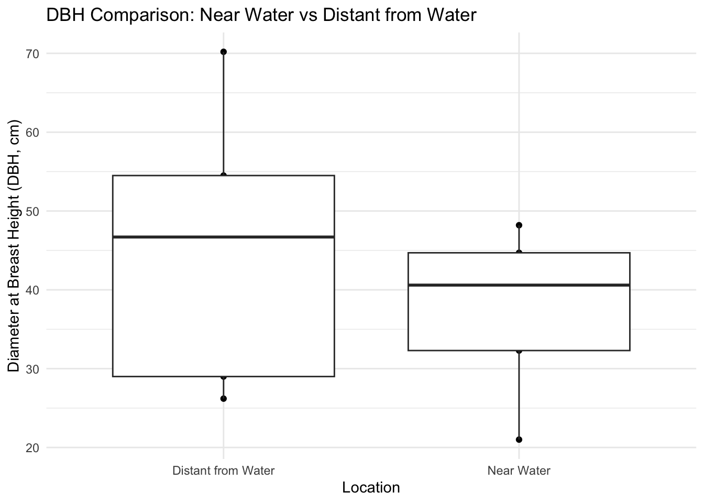

The following objects are masked from 'package:stats':
filter, lag
The following objects are masked from 'package:base':
intersect, setdiff, setequal, union
Attaching package: 'kableExtra'
The following object is masked from 'package:dplyr':
group_rows
Writing and organizing the Data in R Studio
before analysis on DBH can be accomplished, both of the variables containing DBH will need to be converted into a data frame in R Studio.
This could be done with code, but the excel file would need to be organized where each sheet contains a dataset, and is individually piped into R with excel plugin.
Because this data set only contains 10 vectors, the easiest method will be manually entering DBH into R.
# Generate variables for each set of vectorsdbh_near_water <-c(48.2, 32.3, 40.6, 21.0, 44.7)dbh_distant_from_water <-c(54.5, 70.2, 29.0, 26.2, 46.7)# Convert DBH from inches to centimeters#dbh_near_water <- dbh_near_water * 2.54#dbh_distant_from_water <- dbh_distant_from_water * 2.54# Merge datasets and reshape for plottingdf_near_water <-data.frame(DBH = dbh_near_water, Location ="Near Water")df_distant_from_water <-data.frame(DBH = dbh_distant_from_water, Location ="Distant from Water")# Combine datasetscombined_df <-rbind(df_near_water, df_distant_from_water)# Add a column for biomasscombined_df$"Biomass (kg/tree)"<- (41.173* combined_df$DBH -409.5)# Add a column for Carbon (kg/tree)combined_df$"Carbon (kg/tree)"<- combined_df$Biomass *0.45combined_df$"CO2_per_tree (kg/tree)"<- (combined_df$Carbon *3.66666666667)
These measurements were taken March 20th, 2023 at the SNHU Arboretum for part 1 of the stream pollution experiment that will be taking place for the remainder of this semester. The first step was to gather diameter at breast height for two sets of trees in 15 x 15 foot plots. This data will be useful when considering additional details about the stream.
“near water” was measured between 1 and 5 yards around a seasonal second order stream. Trees were measured at breast height in a cluster of ~ 15 feet^2.
This plot represents the bottom of a small slope separating the walking path of the arboretum and the highway ~ 1/4 mile away
both plots are only a short distance (100 ft at the furthest) from the walking path, likely a highly disturbed part of the forest.
# Plot the dataggplot(combined_df) +geom_point(aes(Location,DBH)) +geom_boxplot(aes(Location,DBH)) +labs(title ="DBH Comparison: Near Water vs Distant from Water",x ="Location",y ="Diameter at Breast Height (DBH, cm)") +theme_minimal()

Observations:
Considering the graph, this does seem to support a statistically significant difference between the measurements taken near and far from the stream. Distant from the water, there seems to be a significant amount of deviation from the mean that could account for a much less significant difference between these two groups.
t.test(dbh_distant_from_water,dbh_near_water)
Welch Two Sample t-test
data: dbh_distant_from_water and dbh_near_water
t = 0.83622, df = 6.524, p-value = 0.4326
alternative hypothesis: true difference in means is not equal to 0
95 percent confidence interval:
-14.88615 30.80615
sample estimates:
mean of x mean of y
45.32 37.36
Observations:
Based on the t-test results for these two groups (t = 0.83622, df = 6.524, p-value = 0.4326), there is no significant difference between the mean DBH of trees near water ( mean = 37.36) and distant from water ( mean = 45.32) at the 95% confidence level. The confidence interval for the difference in means ranges from -14.89 to 30.81, which includes zero, further indicating that the true difference in means might be insignificant.
It is likely the small sample size has an impact of the results of this experiment. Expanding the amount of trees observed in each group may provide a more clear deviation between the two groups.